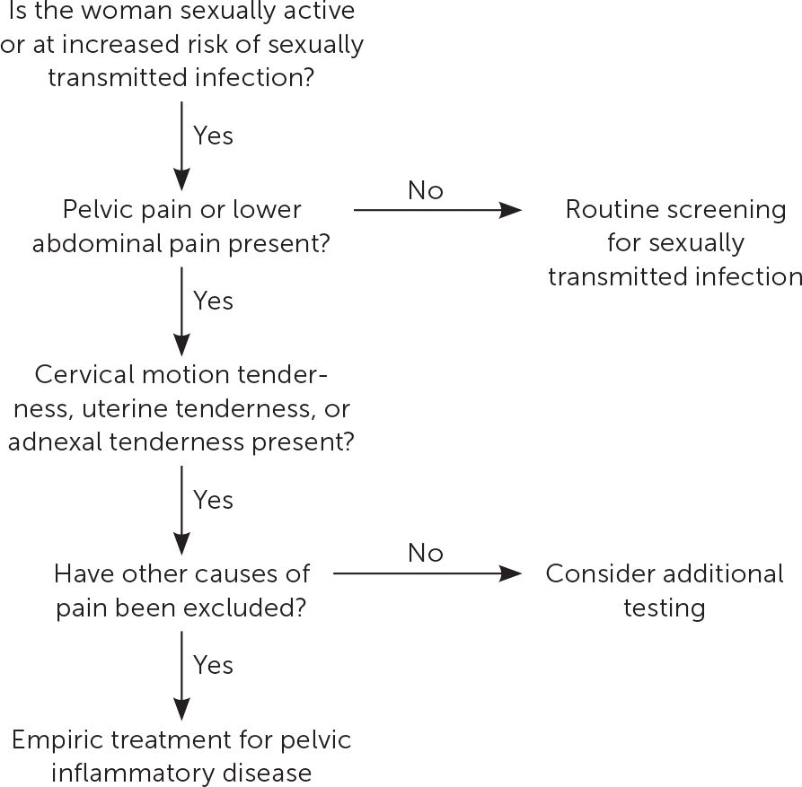

It is acceptable to treat empirically those who present with urethritis or cervicitis while awaiting GC test results.
For urogenital or anorectal gonorrhea, gentimicin can be used as an alternative to ceftriaxone, but not for pharyngeal gonorrhea.
Ideally the sex partners should be seen for treatment, but in most states you can treat the partner without seeing them if it is unlikely they will be able to be seen and they've had sex with the infected partner within the last 60 days. (In these cases cefixime 800 mg PO x 1 can be used in place of ceftriaxone, but ceftriaxone is better)
This page was last updated on
Disclaimer: Information presented in the template should be re-checked and should not be used alone to guide patient care or substitute for clinical judgement.
Note: Please copy text into the EMR prior to adding any HIPPA information. Though no information is being saved/transmitted on this site, typing private information into a web page is generally bad practice.